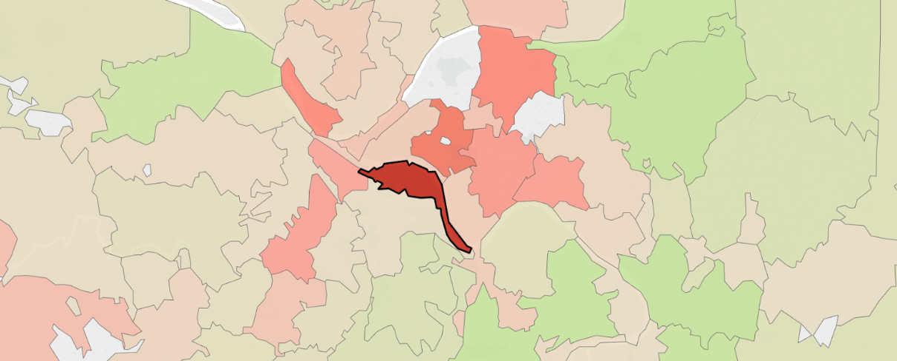

Where's Gentrification
An independent big data project: Using housing data to develop an accurate model for quantifying gentrification across the US. Using this model, commuity leaders could be able to identify and act upon gentrification before and as it occurs rather than after the fact.
Zillow Housing Data
Every month, realistate website Zillow releases its housing report for that month. But along with this report, Zillow realeases all of the data of every house listed on Zillow for that month, as well as the data for every house listed all the way back to April 1996. Zillow is also kind enough to organize the data based on state, metropolitian area, municipality, zip code, and neighborhood. Aditionally statistics about these geographic regions are published for various housing types: 1-Bedroom, 2-Bedroom, Condos, etc.. All of these housing types are amalgemated into a single statistic: Median housing price per square foot of property. The data can be found here, if you would like to check the data out.
Using Housing Data
We choose to use the Price per Squarefoot Index when looking for gentrification. This is because the index provides a more accurate representation of the inherent value in housing in that region in that it removes all other factors, particularly the property's squarefootage. This index was evaluated on a Zip Code wide level. This is because a Zip Code is the closest analogue for a neighborhood (The neighborhood index is quite incomplete. Aditionally, Zip Codes cross minicipal lines and represent an economic zone more accurately than all the other geographic zones).
Using this index we designed our own, which since we are uncreative statistics nerds we will call it the Gentrification Index. This index should take two aspects of the Zip Code's property value: the change in the proprty values in comparisson to the regional median--since an increase in the property value is what ultimately forces residents from their home--and the change in property value rank when compared to the Zip Code's near by Zip Codes. Comparring the individual Zip Codes to their region eliminates regional economic situation from the econimic situation in the Zip Code itself. Combining these two numbers using this equation yeilds the gentrification index for the Zip Code.
Testing model in Pittsburgh
Since we wanted to test our model on an area we were familier with, we wanted to test it on an area we were familier with and would easily be able to get a general gist of our model's accuracy. Keeping this in mind, we decided to test this on our city Pittsburgh. Since we were quite familier with the city, we could easily say that this area is gentirified, this is not, you get the point. In this we defined the Pittsburgh region as all ZIP codes that follow the form 15XXX, ie.: 15123, 15456, etc.
When it actually comes to applying the model to the region, we computed the values for every one of the 15XXX ZIPs. Looking to these index values, you would expect to see several areas: the South Side, East Liberty/Bakery Square, etc. (If you aren't from Pittsburgh or aren't familier with the city, these are areas which have clearly seen gentrification in the recentish past). Noticeably, the two out of the top three ZIP codes were 15203 and 15206, representing the South Side and East Liberty respectively(East Liberty might have been number two or number one if it were not for the fact that the neighborhood is split between three different ZIPs).
Applying Index to National Data
So taking our techniques from the Pittsburgh model, we applied them to the entirety of Zillows national dataset.
Note that in this we used the 200 nearest ZIPs as the region instead of using the form ABXXX for the region.